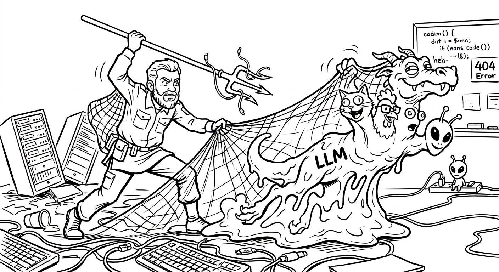
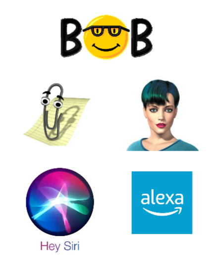
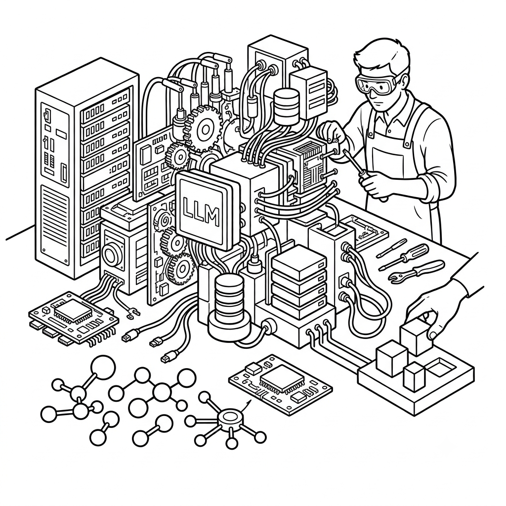
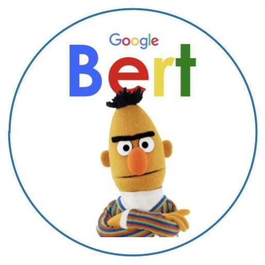

Modèles de langage, modèles conversationnels, modèles agentiques
Kit de survie pour le chercheur en sciences humaines et sociales
En personne / En ligne
Université Paris 1 Panthéon-Sorbonne · 2026
Objectif de la formation
Module 1 Points de repères
- Comprendre les fondamentaux des LLM et des systèmes informatiques qui en sont issus.
- Assigner un rôle au LLM dans le processus de recherche.
- S'interroger sur les conditions qui permettent de les intégrer à la démarche scientifique.
Module 2 Mise en œuvre
Mettre en œuvre ces notions pour l'analyse de corpus textuels avec le logiciel expérimental ActiveTigger :
- exploration de corpus,
- annotation,
- classification, distant reading avec IA générative.
Définitions
- Intelligence artificielle
- Catégorie socialement utilisée pour désigner les technologies informatiques qui automatisent des tâches auparavant associées à l'intelligence humaine ou animale. Historiquement mobile (AI Effect).
≠ concept
= représentation au contenu fluctuant,
accompagnée d'un imaginaire
Des concepts techniques, eux, solides
Ceux sur lesquels on peut réellement s'appuyer :
- les réseaux de neurones profonds (deep learning) ;
- l'attention / les transformers ;
- les grands modèles de langage (→ « IA » employée en ce sens).
Expérience : interagissons directement avec un LLM
Interface d'expérimentation :
→ lien fourni en séance
- Se connecter avec le mot de passe
(fourni en séance) - Sélection de LLM peu « transformés »
- Paramètres présentés en séance 2

Trois questions
- Pourquoi / comment l'IA répond-elle au lieu de « continuer du texte » ?
- Pourquoi les LLM ne préservent-ils pas l'état de la conversation — et comment les IA commerciales le préservent-elles ?
- Pourquoi le ton / l'orientation du texte généré est-il spécifique au regard des masses de texte trouvées en ligne ?

Le cadre général du machine learning
Les limites du paradigme « machine learning »
Phase d'entraînement
le modèle évolue- Environnement technique dédié
- « Absorption » d'informations
- Pas de service rendu
Phase d'inférence
le modèle est figé- Environnement technique différent
- Modèle figé (knowledge cutoff)
- Service utile rendu
Une connaissance répartie dans les couches
Fine-tuning réentraîner uniquement les couches superficielles (les dernières)
Est-ce qu'un modèle « répond » ?
On fine-tune le modèle sur des données de ce type :
<|system|> You are a helpful assistant. <|user|> Quelle est la capitale de la France ? <|assistant|> Paris.
- Format « instruction » ou « conversation » appris durant le fine-tuning.
- Le modèle ne « répond » pas : il continue du texte selon un modèle de dialogue.
D'où vient la persistance de l'état conversationnel ?
D'où vient la persistance de l'état conversationnel ?
Bien distinguer
La quête de systèmes anthropomorphes
concerne les interfaces homme-machine
Le machine learning, l'IA générative
exécution de tâches cognitives complexes- Génération de texte
- Réponse à des instructions
Le ton, l'orientation spécifique des modèles conversationnels
- Plusieurs niveaux d'intervention
- Le plus important : le « RL » (apprentissage par renforcement)
- Ton et orientation incorporés dans le modèle


Training language models to follow instructions with human feedback — OpenAI · arxiv.org/abs/2203.02155
Plusieurs niveaux de modération
La sélection des contenus d'entraînement
Classification par IA, élimination de contenus haineux, etc.
La création des jeux de données SFT
Contenus collectés / sélectionnés / créés « à la main »
Le reinforcement learning
Ton et modération incorporés dans le LLM
Les guardrails
Identification de contenus problématiques en sortie
Le prompt système
Souvent très long
LLM vs Chatbot
Fondement théorique de l'usage des LLM : « In-context learning »
Génération de texte → montée en généralité des modèles de ML

★ Hypothèse GPT-3 : la performance en in-context learning est corrélée à la taille du modèle.
Usage d'un LLM — cadre de compréhension
Mémoire paramétrique
- Taille ++
- Explicabilité --
- Contrôle -
- Fraîcheur -
Mémoire non-paramétrique
- Taille -
- Explicabilité ++
- Fiabilité ++
- Fraîcheur ++
Pourquoi des « foundation models » ?
→ Parce qu'on ne peut les entraîner soi-même !
Ils diffèrent par :
Bref historique
Séance 2 : Modalités d'usage des LLM en recherche
Incursion dans la mécanique interne

Le cadre général du machine learning
Que fait un réseau de neurones ?
des données numériques contenant des structures complexes
Neurones : découvrir une relation statistique entre l'entrée et la sortie
un nombre limité de modalités de sortie
Des problèmes qui s'y prêtent bien
Génération de texte : un double défi
mot mot
mot mot mot
mot 2
mot 3
…
Un vecteur = un point dans un espace
Plongement lexical : un vecteur qui représente le sens
Explorons un « espace latent » sémantique
« une forme d'arithmétique sémantique »
Quelles bases théoriques ?
La sémantique distributionnelle
« You shall know a word by the company it keeps »— J. R. Firth, 1957
dans tous ses contextes d'apparition
Limite de l'embedding de 1re génération
Des sens très différents — pourtant un seul et même vecteur, figé.
L'algorithme de l'attention (2017)
De l'embedding statique à l'embedding contextuel
un embedding spécifique à chaque occurrence d'un mot dans son contexte
un embedding pour un énoncé entier
Le grand classique : BERT
Bidirectional Encoder Representations from Transformers

Génération = classification
prochain token → se
prochain token → promenait
Des millions de « modalités » de sortie
- langues
- flexions
- noms propres
- vocabulaire médical
La solution : les tokens
Une liste de tokens, de taille fixe et limitée
Projeter des textes dans des espaces sémantiques
-
Un texte → un vecteur
-
Réduction 2D
- Visualiser / Cartographier
-
Classer machine learning
- Entraîner un classifieursur des textes étiquetés
- Générerin-context learning · tâches en langage naturel
-
Application au distant reading

Spatialisation & clustering
- Projeter les énoncés dans un espace sémantique
- Regarder comment ils se regroupent & les caractéristiques des groupes
Classification
+ embeddings2010's
BERTpré-entraîné
In-context learning
Exécution d'une instruction en langage naturel → sortie formatée
Indique si ce texte est de catégorie 1, 2 ou 3, assigne-lui un score de 1 à 5, puis justifie.
Texte : { text }
| cat. | note | justification |
|---|---|---|
| 2 | 5 | … |
| 1 | 1 | … |
| 3 | 2 | … |